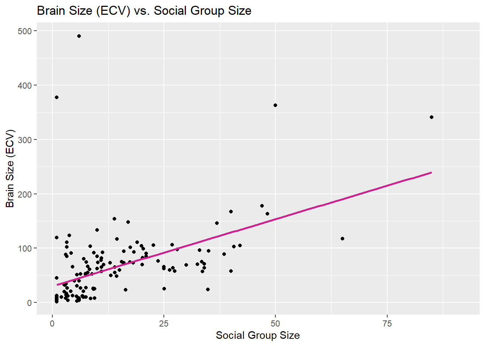
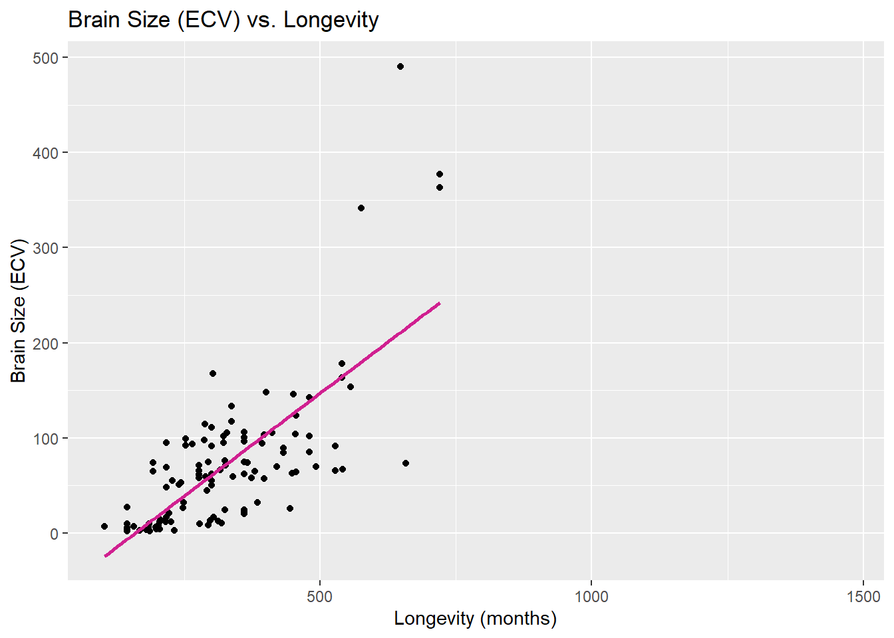
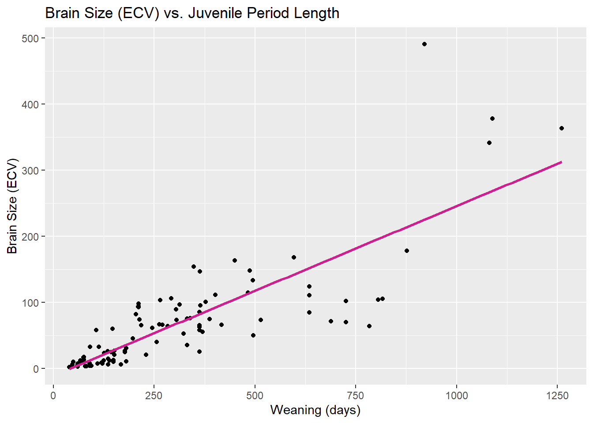

── Attaching core tidyverse packages ──────────────────────── tidyverse 2.0.0 ──
✔ dplyr 1.1.4 ✔ readr 2.1.5
✔ forcats 1.0.0 ✔ stringr 1.5.1
✔ ggplot2 3.5.1 ✔ tibble 3.2.1
✔ lubridate 1.9.3 ✔ tidyr 1.3.1
✔ purrr 1.0.2
── Conflicts ────────────────────────────────────────── tidyverse_conflicts() ──
✖ dplyr::filter() masks stats::filter()
✖ dplyr::lag() masks stats::lag()
ℹ Use the conflicted package (<http://conflicted.r-lib.org/>) to force all conflicts to become errors
library(readr)library(skimr)
f <-"https://raw.githubusercontent.com/difiore/ada-datasets/main/Street_et_al_2017.csv"#assign file to variable fd <-read_csv(f, col_names =TRUE) #read csv file f and assign to variable d
Rows: 301 Columns: 13
── Column specification ────────────────────────────────────────────────────────
Delimiter: ","
chr (2): Species, Taxonomic_group
dbl (11): Social_learning, Research_effort, ECV, Group_size, Gestation, Wean...
ℹ Use `spec()` to retrieve the full column specification for this data.
ℹ Specify the column types or set `show_col_types = FALSE` to quiet this message.
# Create scatterplots of ECV vs. other variablesp1 <-ggplot(d, aes(x = Group_size, y = ECV)) +geom_point() +geom_smooth(method ="lm", se =FALSE, color ="violetred") +labs(title ="Brain Size (ECV) vs. Social Group Size", x ="Social Group Size", y ="Brain Size (ECV)")p2 <-ggplot(d, aes(x = Longevity, y = ECV)) +geom_point() +geom_smooth(method ="lm", se =FALSE, color ="violetred") +labs(title ="Brain Size (ECV) vs. Longevity", x ="Longevity (months)", y ="Brain Size (ECV)")p3 <-ggplot(d, aes(x = Weaning, y = ECV)) +geom_point() +geom_smooth(method ="lm", se =FALSE, color ="violetred") +labs(title ="Brain Size (ECV) vs. Juvenile Period Length", x ="Weaning (days)", y ="Brain Size (ECV)")p4 <-ggplot(d, aes(x = Repro_lifespan, y = ECV)) +geom_point() +geom_smooth(method ="lm", se =FALSE, color ="violetred") +labs(title ="Brain Size (ECV) vs. Reproductive Lifespan", x ="Reproductive Lifespan (months)", y ="Brain Size (ECV)")p1
`geom_smooth()` using formula = 'y ~ x'
Warning: Removed 150 rows containing non-finite outside the scale range
(`stat_smooth()`).
Warning: Removed 150 rows containing missing values or values outside the scale range
(`geom_point()`).

p2
`geom_smooth()` using formula = 'y ~ x'
Warning: Removed 189 rows containing non-finite outside the scale range
(`stat_smooth()`).
Warning: Removed 189 rows containing missing values or values outside the scale range
(`geom_point()`).

p3
`geom_smooth()` using formula = 'y ~ x'
Warning: Removed 199 rows containing non-finite outside the scale range
(`stat_smooth()`).
Warning: Removed 199 rows containing missing values or values outside the scale range
(`geom_point()`).

p4
`geom_smooth()` using formula = 'y ~ x'
Warning: Removed 211 rows containing non-finite outside the scale range
(`stat_smooth()`).
Warning: Removed 211 rows containing missing values or values outside the scale range
(`geom_point()`).
# Filter data for each taxonomic group, removing missing valuesd_catarrhine <-na.omit(d[d$Taxonomic_group =="Catarrhini", c("ECV", "Group_size")])d_platyrrhine <-na.omit(d[d$Taxonomic_group =="Platyrrhini", c("ECV", "Group_size")])d_strepsirhine <-na.omit(d[d$Taxonomic_group =="Strepsirhini", c("ECV", "Group_size")])# Run linear regression models for each groupmodel_catarrhine <-lm(ECV ~ Group_size, data = d_catarrhine)model_platyrrhine <-lm(ECV ~ Group_size, data = d_platyrrhine)model_strepsirhine <-lm(ECV ~ Group_size, data = d_strepsirhine)model_catarrhine
β₁ tells us how much brain size increases when social group size increases by 1.So, yes, the regression coefficients differ among taxonomic groups, with Platyrrhines having the steepest slope (1.965), followed by Strepsirhines (1.841) and Catarrhines (1.146), indicating that brain size increases more rapidly with group size in Platyrrhines. The β₀ represents absolute brain size, where Catarrhines generally have larger brains.
# Compute the observed slope from the actual (unpermuted) datamodel_lm <-lm(ECV ~ Group_size, data = d_clean)obs_beta_1 <-coef(model_lm)["Group_size"] # Store the observed slope# Number of permutationsn_perm <-1000perm_slopes <-numeric(n_perm)for (i in1:n_perm) { d_permuted <- d_clean # Copy data d_permuted$ECV <-sample(d_permuted$ECV) # Shuffle ECV values randomly perm_model <-lm(ECV ~ Group_size, data = d_permuted) perm_slopes[i] <-coef(perm_model)["Group_size"] # Store slope}# Compute p-value using the quantile methodp_value_quantile <-mean(abs(perm_slopes) >=abs(obs_beta_1))# Compute p-value using the theory-based methodperm_sd <-sd(perm_slopes)t_stat_perm <- obs_beta_1 / perm_sdp_value_theory <-2*pt(-abs(t_stat_perm), df =nrow(d_clean) -2)# Visualizing the null distributionhist(perm_slopes, breaks =30, col ="lightsteelblue1", main ="Null Distribution of Slopes", xlab ="Slope Coefficient", ylab ="Frequency")abline(v = obs_beta_1, col ="violetred", lwd =2, lty =2) # Observed slope
What to permute? Shuffle ECV values while keeping Group_size fixed. Why? This removes any real relationship between the variables. P-value (quantile method)? The proportion of permuted slopes as extreme or more extreme than the observed slope. P-value (theory-based method)? Uses the standard deviation of the permuted slopes to calculate a t-statistic and p-value. Significance? If p < 0.05, the relationship is likely real. If p > 0.05, it may be due to chance.
# Number of bootstrap samplesn_boot <-1000boot_slopes <-numeric(n_boot)# Perform bootstrappingfor (i in1:n_boot) { boot_sample <- d_clean[sample(nrow(d_clean), replace =TRUE), ] # Resample with replacement boot_model <-lm(ECV ~ Group_size, data = boot_sample) # Fit model boot_slopes[i] <-coef(boot_model)["Group_size"] # Store slope}# Compute 95% CI using the Quantile MethodCI_quantile <-quantile(boot_slopes, c(0.025, 0.975))# Compute 95% CI using the Theory-Based Methodboot_se <-sd(boot_slopes)CI_theory <-c(obs_beta_1 -1.96* boot_se, obs_beta_1 +1.96* boot_se)# Plot bootstrapped distributionhist(boot_slopes, breaks =30, col ="lightsteelblue1", main ="Bootstrap Distribution of Slope Coefficients",xlab ="Slope Coefficient", ylab ="Frequency")abline(v = obs_beta_1, col ="violetred", lwd =2, lty =2) # Observed slopeabline(v = CI_quantile, col ="royalblue4", lwd =2, lty =3) # 95% CI from quantiles
Yes, both confidence intervals do not include zero, which suggests that the slope coefficient is significantly different from zero. This means that group size is likely a meaningful predictor of ECV and the relationship is not due to random chance.